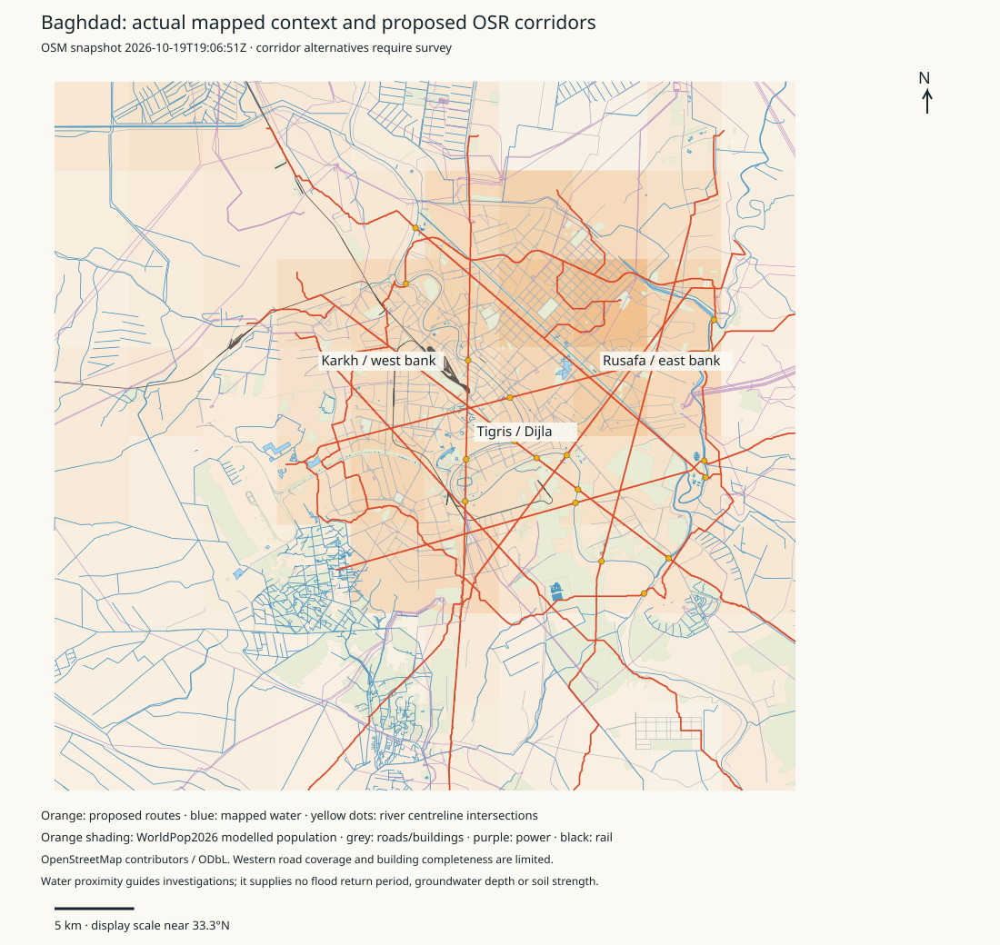
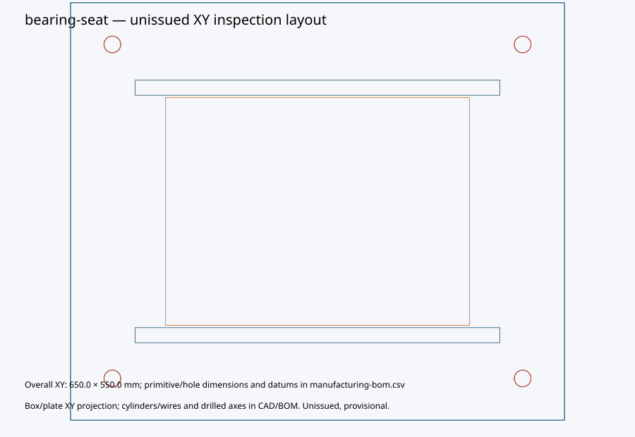
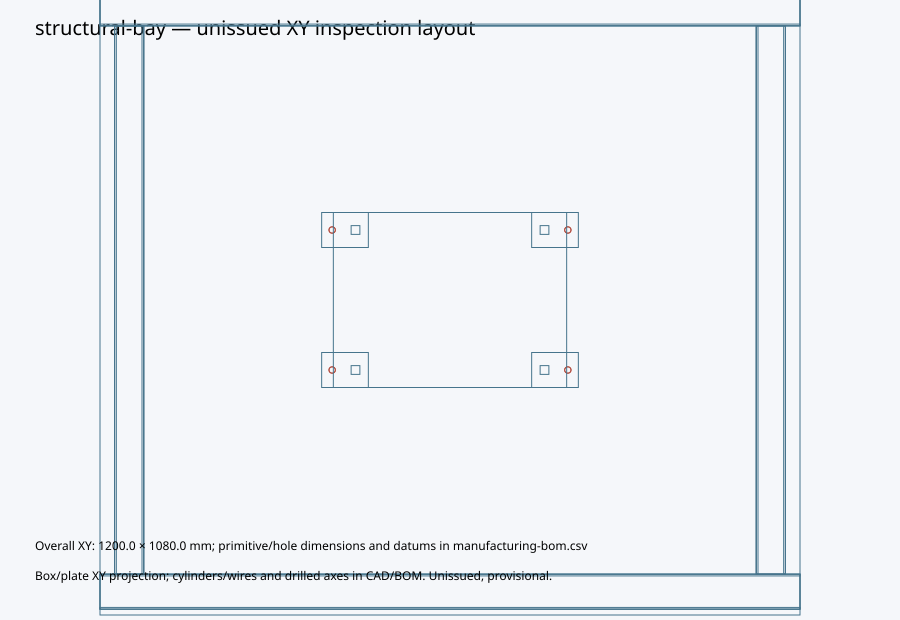

Provisional engineering development. No complete train, civil system, manufacturing qualification or physical release is claimed.
414 scoped requirement records: 69 Baghdad reference parts plus 345 legacy/unreconciled records. 21 sourced facts. 92 completed trials; 0 qualified components.
Automatic parameter/design generation and scoped verification for registered provisional pilot families plus executable cassette software; remaining families require generator/evaluator development
Baseline and requirement inventory | Full progress and open work | Executed test receipt | Test log | Original evidence | Checksums
88 deliverables across 13 work packages. 0 engineering exits closed; 0 digital specifications with complete reviewed records. Digital coverage, physical validation and manufacturing release are separate. Partial implementation and executed research checks do not constitute completed designs.
All task statuses, pilot contracts and RFQ/test requests | Named prototype and conflicts | 414-record architecture/family crosswalk | Source, standards and family registers | Exact revision integration and open passage gates
هذه تصاميم ودراسات أولية. لم يكتمل تصميم القطار أو المنشآت، ولا يوجد تصريح للتصنيع أو التشغيل. يتضمن السجل 88 مهمة؛ لا توجد مهام ذات قبول هندسي نهائي. الفحوص البرمجية والهندسية المنفذة منفصلة عن الاختبارات الميدانية والقبول المستقل. تبقى بيانات التربة والموردين والاختبارات الفعلية مطلوبة.
توضح الروابط أعلاه المتطلبات والمكونات والواجهات والأدلة والمهمة التالية لكل حزمة عمل. لم تُرسل طلبات البيانات أو عروض الأسعار إلى أي جهة.
| Task / PDF page | Deliverable | Implementation evidence / limit | Engineering exit |
|---|---|---|---|
| WP00-prototype / 3 | Freeze the named provisional six-car prototype and operating duty | partial-provisional; provisional named configuration; layout/route/duty adoption remains open | open |
| WP00-architecture / 3 | Reconcile architecture alternatives and conflicting dimensions or masses | partial-provisional; architecture boundaries enforced; physical duplicate reconciliation requires review | open |
| WP00-sources / 3 | Create complete, revisioned source cards with applicability and uncertainty | partial-provisional; typed and hash-aware source contract; missing licensed/supplier hashes held | open |
| WP00-standards / 3 | Maintain standards editions, licences, jurisdiction and impact reviews | partial-provisional; edition/chemistry impact register; adoption/licences open | open |
| WP00-authority / 3 | Appoint engineering owners, independent reviewers and acceptance authority | external-input; obtain externally authenticated evidence and appointed review | open |
| WP01-crosswalk / 3 | Crosswalk all 414 records into architecture and reusable component families | partial-provisional; all source identities retained; inferred family/type mappings require confirmation | open |
| WP01-component / 3 | Define the common owned/purchased component contract | partial-provisional; typed wrapper over existing geometry authority | open |
| WP01-interfaces / 3 | Define structural, bearing, electrical, air/fluid and software interfaces | partial-provisional; typed endpoints and applicability; full railway interface population open | open |
| WP01-invalidation / 3 | Propagate design changes to every affected representation and check | partial-provisional; revision-bound dependent-adapter invalidation; production CAD/BIM adapters incomplete | open |
| WP01-consolidation / 3 | Consolidate existing workflows through compatibility adapters | partial-provisional; existing queue, qualification, native confirmation and portable publication extended | open |
| WP01-bim / 3 | Export identity-preserving CAD/STEP/IFC and validate IFC information with IDS | partial-provisional; native tessellation to stable-ID IFC and executed IDS information tests; issued BIM placement and engineering performance remain open | open |
| WP02-bearing-omission / 2 | Correct the omitted 60-tonne track-support bearing load | partial-provisional; complete reference load allocation replaces parallel deck-only estimate | open |
| WP02-permanent / 2 | Account for every permanent allocation without omission or duplication | partial-provisional; all reference-kit allocations accounted; unresolved allowances remain explicit | open |
| WP02-actions / 2 | Define signed action envelopes and applicable load combinations | partial-provisional; signed reference actions and explicit unquantified mandatory action holds | open |
| WP02-load-path / 2 | Carry the shared load path through every support to ground | partial-provisional; signed uniform-train and added-support/walkway/service gravity transfer through bearings, caps, columns and foundations; dynamic stiffness and qualified resistance open | open |
| WP03-connected-bay / 4 | Complete the connected structural bay and vehicle interfaces | partial-provisional; connected provisional underframe/side/roof/end and opening-aware sheet assembly; approved geometry, bogie/equipment interfaces and whole-body structural qualification open | open |
| WP03-local-joints / 4 | Detail reversible joints and local load introduction | partial-provisional; actual bolt stack and local bearing/net/tearout/block-shear/prying sensitivities; contact/preload and applicable fatigue qualification held | open |
| WP03-welds / 4 | Define welds, distortion allowances, inspection and NDT | partial-provisional; proposed weld register, throat/direct-load screen and inspection/WPS requirements; qualified procedure, distortion and NDT evidence absent | open |
| WP03-structural-checks / 4 | Check structural, fatigue, modal, handling and degraded load cases | partial-provisional; actual RHS connected 3D elastic frame with eccentric joint assumptions, independent controls, refinement and adverse load cases; local buckling, measured joint stiffness, fatigue and railway acceptance held | open |
| WP03-crash / 4 | Develop and validate the crash load path | not-implemented; finish remaining scope and execute the exact engineering exit cases | open |
| WP03-purchased / 4 | Define qualified purchased running-gear and traction boundaries | not-implemented; finish remaining scope and execute the exact engineering exit cases | open |
| WP03-composite / 4 | Qualify compatible composite material systems and repairs | not-implemented; finish remaining scope and execute the exact engineering exit cases | open |
| WP03-solver / 4 | Benchmark shell, contact, preload and nonlinear analysis adapters | not-implemented; finish remaining scope and execute the exact engineering exit cases | open |
| WP03-build-pack / 4 | Issue a consistent pilot CAD, drawing, BOM, process and inspection package | partial-provisional; editable CAD/STEP, unissued layout, BOM/joints/QA; issued drawings and process qualification open | open |
| WP03-correlation / 4 | Correlate the structural bay with independent and physical evidence | external-input; obtain externally authenticated evidence and appointed review | open |
| WP04-cassette-details / 5 | Finish cassette mating, retention, bonding, seals and inspection details | partial-provisional; owned detailed cover, seals, bonding, routed conductors and retention alternative; supplier internals and complete prototype acceptance held | open |
| WP04-lock / 5 | Design guided location and positive retention | partial-provisional; guided host/positive retention and access sensitivities; forces/wear/environmental correlation held | open |
| WP04-process / 5 | Generate assembly, inspection and removal from one process graph | partial-provisional; process/access/teardown model; measured installation not performed | open |
| WP04-stages / 5 | Distinguish bench, transport, temporary, installed and maintenance states | partial-provisional; controlled installation/removal states; executed physical states absent | open |
| WP04-tolerance / 5 | Check worst-case dimensional and thermal tolerance stacks | partial-provisional; worst-case dimensional and thermal hypotheses; measured distributions absent | open |
| WP04-civil-kits / 5 | Apply the joint/process method to complete civil kits | not-implemented; finish remaining scope and execute the exact engineering exit cases | open |
| WP04-comparison / 5 | Compare conventional, guided and quick-lock installation at production scale | not-implemented; finish remaining scope and execute the exact engineering exit cases | open |
| WP04-bench / 5 | Demonstrate cassette installation, removal and environmental qualification | external-input; obtain externally authenticated evidence and appointed review | open |
| WP05-single-line / 6 | Create hierarchical traction, charging, battery and auxiliary schematics | partial-provisional; six-car hierarchical HV/LV, charge, isolation, bond and signal net definition; selected devices, routes and protection held | open |
| WP05-harness / 6 | Generate the complete harness definition and manufacturing BOM | partial-provisional; active pin nets and termination BOM; routing/process qualification open | open |
| WP05-ratings / 6 | Verify electrical ratings, derating, protection, bonding and EMC | partial-provisional; cable voltage/heat screens; supplier ampacity/selectivity/EMC unresolved | open |
| WP05-harwin / 6 | Represent the exact Harwin solder-contact mating kits and process | partial-provisional; exact solder-contact kits; derating and complete native mating geometry open | open |
| WP05-battery-duty / 6 | Bind battery and charging calculations to chemistry and repeated route duty | partial-provisional; existing battery solver coupled to repeated synthetic duty, HVAC and fault permissions; measured LFP maps and actual route duty held | open |
| WP05-battery-safety / 6 | Detail battery cooling, isolation, protection, venting and traction limits | not-implemented; finish remaining scope and execute the exact engineering exit cases | open |
| WP05-circuits / 6 | Benchmark circuit transients and electrothermal adapters | partial-provisional; independent IVP and exact RC control; ngspice/electrothermal protection adapter not executed | open |
| WP05-lv-faults / 6 | Test complete LV faults, supply variation and power balances | partial-provisional; offline fault and power controls; bench/SIL/HIL unexecuted | open |
| WP05-battery-bench / 6 | Verify the battery, charger and auxiliary chain on bench/SIL/HIL | external-input; obtain externally authenticated evidence and appointed review | open |
| WP06-whole-car / 7 | Define whole-car sensible, latent, ventilation and hot-soak duty | partial-provisional; template-bound occupancy/climate plus explicit whole-car sensible/moisture planning assumptions; adopted duty/maps/air-quality criteria held | open |
| WP06-level1 / 7 | Implement conserving heat, moisture and duct-network models | partial-provisional; temporal air, sensible energy and water balances coupled to battery auxiliary draw; refrigeration circuit and spatial distribution remain open | open |
| WP06-level2 / 7 | Couple fan, duct, filter, coolant and refrigeration maps | not-implemented; finish remaining scope and execute the exact engineering exit cases | open |
| WP06-level3 / 7 | Confirm shortlisted flow layouts with converged CFD and measurements | not-implemented; finish remaining scope and execute the exact engineering exit cases | open |
| WP06-interfaces / 7 | Detail HVAC seals, drains, supports, isolation, fire and maintenance interfaces | not-implemented; finish remaining scope and execute the exact engineering exit cases | open |
| WP06-faults / 7 | Evaluate thermal, airflow, control and cooling failures | partial-provisional; ten temporal nominal/degraded cases and refinement; actual comfort, supplier maps and physical correlation held | open |
| WP06-rig / 7 | Correlate the complete cabin/HVAC duty on a calibrated rig | external-input; obtain externally authenticated evidence and appointed review | open |
| WP07-kit-details / 8 | Detail every manufactured civil unit and installed item | partial-provisional; connected representative bay with actual gauge-spaced track plinths and walkway/service brackets; complete reinforcement/prestress, anchorage and qualified resistance held | open |
| WP07-resistance / 8 | Check concrete, prestress, bearing and staged structural resistance | partial-provisional; hollow cap fibre section and shared-reaction/handling screens; shear/fatigue/early strength/anchor/restraint and qualified resistance held | open |
| WP07-ground-model / 8 | Develop site-applicable ground and foundation models | not-implemented; finish remaining scope and execute the exact engineering exit cases | open |
| WP07-ground-input / 8 | Obtain Baghdad ground, water, survey, hazard and utility evidence | partial-provisional; actual open-data terrain/population/land/water/infrastructure estimates and investigation priorities; surveyed ground and physical tests remain open | open |
| WP07-system-opt / 8 | Optimise foundations, supports, span and deck as one installed system | not-implemented; finish remaining scope and execute the exact engineering exit cases | open |
| WP07-corridor / 8 | Extend comparisons to repeated corridors and real erection logistics | not-implemented; finish remaining scope and execute the exact engineering exit cases | open |
| WP07-erection / 8 | Verify transport, erection and temporary load paths | partial-provisional; revision-bound unit and lift inventory with provisional crane-at-radius screens; actual crane chart, temporary stability and stage resistance remain open | open |
| WP07-installed / 8 | Close civil as-built and installed interface evidence | external-input; obtain externally authenticated evidence and appointed review | open |
| WP08-adapters / 9 | Reuse and requalify existing flexible, spatial and contact adapters | partial-provisional; existing physics adapters indexed; source-bound dynamic requalification pending | open |
| WP08-exact-vehicle / 9 | Bind dynamics to exact vehicle modes, mass properties and supplier laws | not-implemented; finish remaining scope and execute the exact engineering exit cases | open |
| WP08-kit-interface / 9 | Connect the complete kit, bearing, cassette and software revisions | partial-provisional; exact child revision interface and ledger; full dynamic passage unexecuted | open |
| WP08-passages / 9 | Complete full train passages and adverse operating cases | not-implemented; finish remaining scope and execute the exact engineering exit cases | open |
| WP08-convergence / 9 | Demonstrate time, mesh, rail and modal convergence | not-implemented; finish remaining scope and execute the exact engineering exit cases | open |
| WP08-cosimulation / 9 | Couple power, heat, force and control through explicit interfaces | partial-provisional; sampled controller/HVAC/battery transient with independent energy/water ledgers; coupled vehicle/track/structure physics and hardware timing held | open |
| WP08-calibration / 9 | Calibrate against independent physical data and untouched holdouts | external-input; obtain externally authenticated evidence and appointed review | open |
| WP09-two-loops / 10 | Separate the design loop from benchmarked capability development | partial-provisional; isolated developer/critic separate from trusted family registry and design loop | open |
| WP09-families / 10 | Register reusable families with controlled domains and independent checks | partial-provisional; family domains, existing adapters and explicit unregistered-family work orders | open |
| WP09-grammar / 10 | Generate manufacturing-constrained shape and assembly alternatives | partial-provisional; 54 floor/support-path recipes plus six complete carbody stock and nine connected civil recipes; registered panel companion adds thermal construction choices; curved-link adapter remains open | open |
| WP09-material-bundle / 10 | Keep material properties in inseparable sourced bundles | partial-provisional; inseparable sourced bundles, scope and density consistency guards | open |
| WP09-objectives / 10 | Retain constraint-first multiobjective alternatives with unknown costs visible | partial-provisional; constraint-first multiobjective frontier; null costs excluded from dominance claims | open |
| WP09-reproducibility / 10 | Preserve sources, runtime, seeds, budgets, failures and fidelity discrepancy | partial-provisional; source/runtime/recipe identities, retained failures/native correspondence; surrogate qualification not implemented | open |
| WP09-fairness / 10 | Allocate effort fairly and stop when missing inputs prevent progress | partial-provisional; least-served family scheduling and finite-domain stop; missing-data work stays open | open |
| WP09-improvement / 10 | Demonstrate independently checked shape and assembly/material improvements | not-implemented; finish remaining scope and execute the exact engineering exit cases | open |
| WP10-test-pyramid / 11 | Implement the layered verification and acceptance evidence contracts | partial-provisional; separate research/digital/physical/production gates | open |
| WP10-ci / 11 | Run fast CI and scheduled equipped-runner native acceptance profiles | partial-provisional; fast CI and weekly equipped-runner exact-source qualification; skipped required native checks veto qualification | open |
| WP10-negative-controls / 11 | Maintain adverse controls for omissions, faults and invalid domains | partial-provisional; omission/architecture/revision/electrical/duct/tolerance/source controls; local panel/prestress/ground detail controls remain open | open |
| WP10-authentication / 11 | Authenticate raw measurements, calibration and independent disposition | partial-provisional; pinned-key signed raw/calibration and independent applicable review; no release authority inferred | open |
| WP10-fixtures / 11 | Define and build the coupon, joint and subsystem test fixtures | partial-provisional; data/fixture/holdout specifications generated; fixture manufacture/calibration not performed | open |
| WP10-acceptance / 11 | Close serial/batch acceptance, NCRs, retests and authority release | external-input; obtain externally authenticated evidence and appointed review | open |
| WP11-common-ui / 13 | Publish a common offline coverage and release interface with Arabic/RTL | partial-provisional; offline Arabic/English assembly-stage explorer with exact native projections, searchable part/joint/BOM and original CAD/media links; acceptance remains open | open |
| WP11-part-links / 13 | Link each part to joints, drawings, analyses, QA and manufacturing handoffs | partial-provisional; exact detailed-part to joint, manufacturing, analysis and QA handoff; full railway and issued manufacturing/ERP handoff held | open |
| WP11-compare / 13 | Compare scope-complete mass, lifting, time and cost with assumptions visible | partial-provisional; same-domain represented mass and exclusions for all connected alternatives, with full installed mass and costs explicitly unknown; no cheapest qualified solution claimed | open |
| WP11-publication / 13 | Expose current sources, runner status and portable evidence | partial-provisional; new source/result/task links in existing portable report; historical epochs preserved | open |
| WP11-recovery / 13 | Maintain publication recovery and exported-copy consistency checks | partial-provisional; existing receipt recovery and publication-copy regressions retained | open |
| WP12-cassette-build / 14 | Manufacture and qualify the service-cassette prototype | external-input; obtain externally authenticated evidence and appointed review | open |
| WP12-bay-build / 14 | Manufacture and qualify the structural-bay prototype | external-input; obtain externally authenticated evidence and appointed review | open |
| WP12-civil-build / 14 | Manufacture and qualify the viaduct-bay prototype | external-input; obtain externally authenticated evidence and appointed review | open |
| WP12-ncr / 14 | Resolve prototype NCRs and calibrate production and engineering models | external-input; obtain externally authenticated evidence and appointed review | open |
| WP12-rfq / 14 | Prepare revision-specific prototype RFQ and test-data requests | partial-provisional; three pilot RFQ/data packs, no outreach, availability or quotation claim | open |
Detailed cassette, civil reinforcement/handling, part handoff, electrical architecture and 12 coupled HVAC/battery/control duty cases. Native results, failures, unissued drawings, images and trace video are retained with the exact source epoch. Full engineering exits remain open.
Source dates, resolution, coverage, uncertainty, per-route estimates and investigation quantities | Detailed map layers (compressed GeoJSON) | Portable source samples
| Estimate | Result | Scope / uncertainty |
|---|---|---|
| WorldPop 2026 context population | 8,631,424 | Modelled residents in 44.1–44.6°E, 33.1–33.5°N; not census or rail demand |
| SRTM-derived elevation | Median 36.0 m; 5th–95th 31.0–41.0 m | Unsure local vertical accuracy and datum; surface/outlier effects; no survey, flood stage or groundwater level |
| WorldCover 2021 classes | Built-up 31.12%; permanent water 2.73% | 1,654.9 km² approximate sampled area. Western 44.1–44.2°E land-cover gap; unknown is not dry/vacant land |
| Clipped concept corridors | 14 lines; 473.9 route-km; 18 river-centreline intersections | Repository alternatives, not surveyed or adopted alignments; crossings are screening events, not designed bridges |
| Provisional investigation quantities | 1919 locations at 250 m; 971 at 500 m | Chainage scenarios; shared corridors can duplicate locations. Not a specified borehole programme |
| Land-use investigation candidates | 12 | Mapped parcels for investigation only; ownership, availability, services and soil capacity unconfirmed |
| Unique population within 500.0 m of concept lines | 3,883,354; distance-sampling range 3,727,230–4,037,841 | WorldPop 2026 retained extent 44.2–44.75°E, 33.05–33.5°N; ±25 m algorithm bound plus separate pixel/route/model uncertainty. Not station access or ridership |
| Unique population within 1000.0 m of concept lines | 6,206,511; distance-sampling range 6,117,341–6,288,903 | WorldPop 2026 retained extent 44.2–44.75°E, 33.05–33.5°N; ±25 m algorithm bound plus separate pixel/route/model uncertainty. Not station access or ridership |

Terrain, population and mapped infrastructure support investigation planning. River proximity supplies no design flood level, groundwater depth or soil bearing capacity. Corridor proximity estimates are separate from station access and ridership; overlapping routes are counted once in the population union. Missing map coverage remains unknown.
تقديرات مكتبية مبنية على بيانات مفتوحة فعلية للسكان والتضاريس والمياه والبنية التحتية. تساعد في تحديد أولويات المسح والتحريات؛ ولا تثبت قدرة تحمل التربة أو منسوب المياه الجوفية أو الفيضان أو ملكية الأراضي. أعداد السكان قرب المسارات ليست توقعات لعدد الركاب.
Exact candidate ea050cbc92e5f7ccd7d0ece91327dd31240774606acc774ec00044fcfdb2ef68. Native state: completed. Provisional research representative; all assembly closure and qualification holds remain applicable
Part/joint definition | Checks and unresolved requirements | Manufacturing BOM and dimensions | Unexecuted QA plan


Native FreeCAD | Compressed STEP — correspondence/static overlap checks only; bought-out items may be coordination envelopes.
Native-derived IFC | Required information (IDS) | Executed IFC information checks. Information exchange preserves identities; it does not grant engineering acceptance.
Exact candidate 95ceda1b1227656090361c4d92f2e4a4a285a69f877b85c4a659390be6704424. Native state: completed. Provisional research representative; all assembly closure and qualification holds remain applicable
Part/joint definition | Checks and unresolved requirements | Manufacturing BOM and dimensions | Unexecuted QA plan


Native FreeCAD | Compressed STEP — correspondence/static overlap checks only; bought-out items may be coordination envelopes.
Native-derived IFC | Required information (IDS) | Executed IFC information checks. Information exchange preserves identities; it does not grant engineering acceptance.
This candidate failed mandatory checks and is excluded from research and integration selection. Geometry and harness data are retained to diagnose and repair it.
Exact candidate d55ad8d2dd59a9e9f167cb77e9a0ae2e2e97018d39dc29cc20e44e49a8cae6bd. Native state: completed. Excluded diagnostic exhibit; known mandatory failure or failed native geometry; never a research or integration shortlist
Part/joint definition | Checks and unresolved requirements | Manufacturing BOM and dimensions | Unexecuted QA plan


Native FreeCAD | Compressed STEP — correspondence/static overlap checks only; bought-out items may be coordination envelopes.
Native-derived IFC | Required information (IDS) | Executed IFC information checks. Information exchange preserves identities; it does not grant engineering acceptance.
Electrical/HVAC, solder harness, process/removal graph, tolerance failures and open qualification. This supplemental chain has known failed fit screens and unresolved supplier/physical gates; the retained geometry representative is not system eligible.
| Family | Variables | State | Represented mass kg | Failed / held checks |
|---|---|---|---|---|
| bearing-seat | {"bearing_family": "uk-spherical-candidate", "bolt_diameter_m": 0.024, "plate_thickness_m": 0.02} | hold | 172.28615297297375 | mandatory-action/braking-traction, mandatory-action/thermal-restraint, mandatory-action/wind, mandatory-action/seismic, mandatory-action/uplift-contact, mandatory-action/erection, mandatory-action/railway-dynamic-axle-fatigue, mandatory-action/ground-response, mandatory-action/unrepresented-permanent-items, bearing-continuous-temperature-applicability |
| bearing-seat | {"bearing_family": "elastomeric-reference", "bolt_diameter_m": 0.024, "plate_thickness_m": 0.04} | failed | 228.35399186653538 | bearing-continuous-temperature-applicability, mandatory-action/braking-traction, mandatory-action/thermal-restraint, mandatory-action/wind, mandatory-action/seismic, mandatory-action/uplift-contact, mandatory-action/erection, mandatory-action/railway-dynamic-axle-fatigue, mandatory-action/ground-response, mandatory-action/unrepresented-permanent-items |
| bearing-seat | {"bearing_family": "uk-spherical-candidate", "bolt_diameter_m": 0.024, "plate_thickness_m": 0.03} | hold | 200.32007241975455 | mandatory-action/braking-traction, mandatory-action/thermal-restraint, mandatory-action/wind, mandatory-action/seismic, mandatory-action/uplift-contact, mandatory-action/erection, mandatory-action/railway-dynamic-axle-fatigue, mandatory-action/ground-response, mandatory-action/unrepresented-permanent-items, bearing-continuous-temperature-applicability |
| bearing-seat | {"bearing_family": "uk-spherical-candidate", "bolt_diameter_m": 0.027, "plate_thickness_m": 0.04} | hold | 229.74609431600862 | mandatory-action/braking-traction, mandatory-action/thermal-restraint, mandatory-action/wind, mandatory-action/seismic, mandatory-action/uplift-contact, mandatory-action/erection, mandatory-action/railway-dynamic-axle-fatigue, mandatory-action/ground-response, mandatory-action/unrepresented-permanent-items, bearing-continuous-temperature-applicability |
| bearing-seat | {"bearing_family": "elastomeric-reference", "bolt_diameter_m": 0.024, "plate_thickness_m": 0.03} | failed | 200.32007241975455 | bearing-continuous-temperature-applicability, mandatory-action/braking-traction, mandatory-action/thermal-restraint, mandatory-action/wind, mandatory-action/seismic, mandatory-action/uplift-contact, mandatory-action/erection, mandatory-action/railway-dynamic-axle-fatigue, mandatory-action/ground-response, mandatory-action/unrepresented-permanent-items |
| bearing-seat | {"bearing_family": "uk-spherical-candidate", "bolt_diameter_m": 0.027, "plate_thickness_m": 0.03} | hold | 201.72009860992665 | mandatory-action/braking-traction, mandatory-action/thermal-restraint, mandatory-action/wind, mandatory-action/seismic, mandatory-action/uplift-contact, mandatory-action/erection, mandatory-action/railway-dynamic-axle-fatigue, mandatory-action/ground-response, mandatory-action/unrepresented-permanent-items, bearing-continuous-temperature-applicability |
| bearing-seat | {"bearing_family": "uk-spherical-candidate", "bolt_diameter_m": 0.02, "plate_thickness_m": 0.04} | hold | 226.84849147070005 | mandatory-action/braking-traction, mandatory-action/thermal-restraint, mandatory-action/wind, mandatory-action/seismic, mandatory-action/uplift-contact, mandatory-action/erection, mandatory-action/railway-dynamic-axle-fatigue, mandatory-action/ground-response, mandatory-action/unrepresented-permanent-items, bearing-continuous-temperature-applicability |
| bearing-seat | {"bearing_family": "elastomeric-reference", "bolt_diameter_m": 0.02, "plate_thickness_m": 0.03} | failed | 198.8054571326578 | bearing-continuous-temperature-applicability, mandatory-action/braking-traction, mandatory-action/thermal-restraint, mandatory-action/wind, mandatory-action/seismic, mandatory-action/uplift-contact, mandatory-action/erection, mandatory-action/railway-dynamic-axle-fatigue, mandatory-action/ground-response, mandatory-action/unrepresented-permanent-items |
| bearing-seat | {"bearing_family": "elastomeric-reference", "bolt_diameter_m": 0.027, "plate_thickness_m": 0.02} | failed | 173.69410290384468 | bearing-continuous-temperature-applicability, mandatory-action/braking-traction, mandatory-action/thermal-restraint, mandatory-action/wind, mandatory-action/seismic, mandatory-action/uplift-contact, mandatory-action/erection, mandatory-action/railway-dynamic-axle-fatigue, mandatory-action/ground-response, mandatory-action/unrepresented-permanent-items |
| bearing-seat | {"bearing_family": "elastomeric-reference", "bolt_diameter_m": 0.024, "plate_thickness_m": 0.02} | failed | 172.28615297297375 | bearing-continuous-temperature-applicability, mandatory-action/braking-traction, mandatory-action/thermal-restraint, mandatory-action/wind, mandatory-action/seismic, mandatory-action/uplift-contact, mandatory-action/erection, mandatory-action/railway-dynamic-axle-fatigue, mandatory-action/ground-response, mandatory-action/unrepresented-permanent-items |
| bearing-seat | {"bearing_family": "uk-spherical-candidate", "bolt_diameter_m": 0.02, "plate_thickness_m": 0.03} | hold | 198.8054571326578 | mandatory-action/braking-traction, mandatory-action/thermal-restraint, mandatory-action/wind, mandatory-action/seismic, mandatory-action/uplift-contact, mandatory-action/erection, mandatory-action/railway-dynamic-axle-fatigue, mandatory-action/ground-response, mandatory-action/unrepresented-permanent-items, bearing-continuous-temperature-applicability |
| bearing-seat | {"bearing_family": "uk-spherical-candidate", "bolt_diameter_m": 0.024, "plate_thickness_m": 0.04} | hold | 228.35399186653538 | mandatory-action/braking-traction, mandatory-action/thermal-restraint, mandatory-action/wind, mandatory-action/seismic, mandatory-action/uplift-contact, mandatory-action/erection, mandatory-action/railway-dynamic-axle-fatigue, mandatory-action/ground-response, mandatory-action/unrepresented-permanent-items, bearing-continuous-temperature-applicability |
| bearing-seat | {"bearing_family": "elastomeric-reference", "bolt_diameter_m": 0.02, "plate_thickness_m": 0.04} | failed | 226.84849147070005 | bearing-continuous-temperature-applicability, mandatory-action/braking-traction, mandatory-action/thermal-restraint, mandatory-action/wind, mandatory-action/seismic, mandatory-action/uplift-contact, mandatory-action/erection, mandatory-action/railway-dynamic-axle-fatigue, mandatory-action/ground-response, mandatory-action/unrepresented-permanent-items |
| bearing-seat | {"bearing_family": "elastomeric-reference", "bolt_diameter_m": 0.02, "plate_thickness_m": 0.02} | failed | 170.7624227946156 | bearing-continuous-temperature-applicability, mandatory-action/braking-traction, mandatory-action/thermal-restraint, mandatory-action/wind, mandatory-action/seismic, mandatory-action/uplift-contact, mandatory-action/erection, mandatory-action/railway-dynamic-axle-fatigue, mandatory-action/ground-response, mandatory-action/unrepresented-permanent-items |
| bearing-seat | {"bearing_family": "elastomeric-reference", "bolt_diameter_m": 0.027, "plate_thickness_m": 0.04} | failed | 229.74609431600862 | bearing-continuous-temperature-applicability, mandatory-action/braking-traction, mandatory-action/thermal-restraint, mandatory-action/wind, mandatory-action/seismic, mandatory-action/uplift-contact, mandatory-action/erection, mandatory-action/railway-dynamic-axle-fatigue, mandatory-action/ground-response, mandatory-action/unrepresented-permanent-items |
| bearing-seat | {"bearing_family": "uk-spherical-candidate", "bolt_diameter_m": 0.02, "plate_thickness_m": 0.02} | hold | 170.7624227946156 | mandatory-action/braking-traction, mandatory-action/thermal-restraint, mandatory-action/wind, mandatory-action/seismic, mandatory-action/uplift-contact, mandatory-action/erection, mandatory-action/railway-dynamic-axle-fatigue, mandatory-action/ground-response, mandatory-action/unrepresented-permanent-items, bearing-continuous-temperature-applicability |
| bearing-seat | {"bearing_family": "uk-spherical-candidate", "bolt_diameter_m": 0.027, "plate_thickness_m": 0.02} | hold | 173.69410290384468 | mandatory-action/braking-traction, mandatory-action/thermal-restraint, mandatory-action/wind, mandatory-action/seismic, mandatory-action/uplift-contact, mandatory-action/erection, mandatory-action/railway-dynamic-axle-fatigue, mandatory-action/ground-response, mandatory-action/unrepresented-permanent-items, bearing-continuous-temperature-applicability |
| bearing-seat | {"bearing_family": "elastomeric-reference", "bolt_diameter_m": 0.027, "plate_thickness_m": 0.03} | failed | 201.72009860992665 | bearing-continuous-temperature-applicability, mandatory-action/braking-traction, mandatory-action/thermal-restraint, mandatory-action/wind, mandatory-action/seismic, mandatory-action/uplift-contact, mandatory-action/erection, mandatory-action/railway-dynamic-axle-fatigue, mandatory-action/ground-response, mandatory-action/unrepresented-permanent-items |
| cassette-control | {"variant": "bitmask"} | offline-tests | None | |
| cassette-control | {"variant": "branch"} | offline-tests | None | |
| service-cassette | {"bolt_diameter_m": 0.02, "duct_area_m2": 0.03, "rail_wall_m": 0.004} | failed | 40.17205733854104 | duct-packaging, cassette-system/worst_case_guide_fit, cassette-system/worst_case_connector_float, cassette-system/connector_derating, cassette-system/protection_coordination, cassette-system/actual_removal_access, cassette-system/physical_qualification, cassette-system/nominal-duct/fan_supplier_map, cassette-system/nominal-duct/installed_leak_acceptance, cassette-system/nominal-duct/refrigeration_capacity |
| service-cassette | {"bolt_diameter_m": 0.02, "duct_area_m2": 0.01, "rail_wall_m": 0.003} | failed | 35.54244967279713 | cassette-system/nominal_duct_flow_target, cassette-system/worst_case_guide_fit, cassette-system/worst_case_connector_float, cassette-system/nominal-duct/proposed_flow_target, cassette-system/connector_derating, cassette-system/protection_coordination, cassette-system/actual_removal_access, cassette-system/physical_qualification, cassette-system/nominal-duct/fan_supplier_map, cassette-system/nominal-duct/installed_leak_acceptance, cassette-system/nominal-duct/refrigeration_capacity |
| service-cassette | {"bolt_diameter_m": 0.016, "duct_area_m2": 0.02, "rail_wall_m": 0.004} | failed | 38.802259646284966 | cassette-system/worst_case_guide_fit, cassette-system/worst_case_connector_float, cassette-system/connector_derating, cassette-system/protection_coordination, cassette-system/actual_removal_access, cassette-system/physical_qualification, cassette-system/nominal-duct/fan_supplier_map, cassette-system/nominal-duct/installed_leak_acceptance, cassette-system/nominal-duct/refrigeration_capacity |
| service-cassette | {"bolt_diameter_m": 0.02, "duct_area_m2": 0.03, "rail_wall_m": 0.002} | failed | 33.58812200705324 | duct-packaging, cassette-system/worst_case_guide_fit, cassette-system/worst_case_connector_float, cassette-system/connector_derating, cassette-system/protection_coordination, cassette-system/actual_removal_access, cassette-system/physical_qualification, cassette-system/nominal-duct/fan_supplier_map, cassette-system/nominal-duct/installed_leak_acceptance, cassette-system/nominal-duct/refrigeration_capacity |
| service-cassette | {"bolt_diameter_m": 0.02, "duct_area_m2": 0.03, "rail_wall_m": 0.003} | failed | 36.95544967279714 | duct-packaging, cassette-system/worst_case_guide_fit, cassette-system/worst_case_connector_float, cassette-system/connector_derating, cassette-system/protection_coordination, cassette-system/actual_removal_access, cassette-system/physical_qualification, cassette-system/nominal-duct/fan_supplier_map, cassette-system/nominal-duct/installed_leak_acceptance, cassette-system/nominal-duct/refrigeration_capacity |
| service-cassette | {"bolt_diameter_m": 0.016, "duct_area_m2": 0.01, "rail_wall_m": 0.003} | failed | 34.87055794020887 | cassette-system/nominal_duct_flow_target, cassette-system/worst_case_guide_fit, cassette-system/worst_case_connector_float, cassette-system/nominal-duct/proposed_flow_target, cassette-system/connector_derating, cassette-system/protection_coordination, cassette-system/actual_removal_access, cassette-system/physical_qualification, cassette-system/nominal-duct/fan_supplier_map, cassette-system/nominal-duct/installed_leak_acceptance, cassette-system/nominal-duct/refrigeration_capacity |
| service-cassette | {"bolt_diameter_m": 0.016, "duct_area_m2": 0.03, "rail_wall_m": 0.004} | failed | 39.508759646284965 | duct-packaging, cassette-system/worst_case_guide_fit, cassette-system/worst_case_connector_float, cassette-system/connector_derating, cassette-system/protection_coordination, cassette-system/actual_removal_access, cassette-system/physical_qualification, cassette-system/nominal-duct/fan_supplier_map, cassette-system/nominal-duct/installed_leak_acceptance, cassette-system/nominal-duct/refrigeration_capacity |
| service-cassette | {"bolt_diameter_m": 0.02, "duct_area_m2": 0.02, "rail_wall_m": 0.003} | failed | 36.24894967279713 | cassette-system/worst_case_guide_fit, cassette-system/worst_case_connector_float, cassette-system/connector_derating, cassette-system/protection_coordination, cassette-system/actual_removal_access, cassette-system/physical_qualification, cassette-system/nominal-duct/fan_supplier_map, cassette-system/nominal-duct/installed_leak_acceptance, cassette-system/nominal-duct/refrigeration_capacity |
| service-cassette | {"bolt_diameter_m": 0.02, "duct_area_m2": 0.02, "rail_wall_m": 0.002} | failed | 32.88162200705323 | cassette-system/worst_case_guide_fit, cassette-system/worst_case_connector_float, cassette-system/connector_derating, cassette-system/protection_coordination, cassette-system/actual_removal_access, cassette-system/physical_qualification, cassette-system/nominal-duct/fan_supplier_map, cassette-system/nominal-duct/installed_leak_acceptance, cassette-system/nominal-duct/refrigeration_capacity |
| service-cassette | {"bolt_diameter_m": 0.016, "duct_area_m2": 0.01, "rail_wall_m": 0.004} | failed | 38.09575964628497 | cassette-system/nominal_duct_flow_target, cassette-system/worst_case_guide_fit, cassette-system/worst_case_connector_float, cassette-system/nominal-duct/proposed_flow_target, cassette-system/connector_derating, cassette-system/protection_coordination, cassette-system/actual_removal_access, cassette-system/physical_qualification, cassette-system/nominal-duct/fan_supplier_map, cassette-system/nominal-duct/installed_leak_acceptance, cassette-system/nominal-duct/refrigeration_capacity |
| service-cassette | {"bolt_diameter_m": 0.016, "duct_area_m2": 0.03, "rail_wall_m": 0.003} | failed | 36.28355794020887 | duct-packaging, cassette-system/worst_case_guide_fit, cassette-system/worst_case_connector_float, cassette-system/connector_derating, cassette-system/protection_coordination, cassette-system/actual_removal_access, cassette-system/physical_qualification, cassette-system/nominal-duct/fan_supplier_map, cassette-system/nominal-duct/installed_leak_acceptance, cassette-system/nominal-duct/refrigeration_capacity |
| service-cassette | {"bolt_diameter_m": 0.02, "duct_area_m2": 0.02, "rail_wall_m": 0.004} | failed | 39.46555733854104 | cassette-system/worst_case_guide_fit, cassette-system/worst_case_connector_float, cassette-system/connector_derating, cassette-system/protection_coordination, cassette-system/actual_removal_access, cassette-system/physical_qualification, cassette-system/nominal-duct/fan_supplier_map, cassette-system/nominal-duct/installed_leak_acceptance, cassette-system/nominal-duct/refrigeration_capacity |
| service-cassette | {"bolt_diameter_m": 0.02, "duct_area_m2": 0.01, "rail_wall_m": 0.004} | failed | 38.759057338541034 | cassette-system/nominal_duct_flow_target, cassette-system/worst_case_guide_fit, cassette-system/worst_case_connector_float, cassette-system/nominal-duct/proposed_flow_target, cassette-system/connector_derating, cassette-system/protection_coordination, cassette-system/actual_removal_access, cassette-system/physical_qualification, cassette-system/nominal-duct/fan_supplier_map, cassette-system/nominal-duct/installed_leak_acceptance, cassette-system/nominal-duct/refrigeration_capacity |
| service-cassette | {"bolt_diameter_m": 0.02, "duct_area_m2": 0.01, "rail_wall_m": 0.002} | failed | 32.17512200705323 | cassette-system/nominal_duct_flow_target, cassette-system/worst_case_guide_fit, cassette-system/worst_case_connector_float, cassette-system/nominal-duct/proposed_flow_target, cassette-system/connector_derating, cassette-system/protection_coordination, cassette-system/actual_removal_access, cassette-system/physical_qualification, cassette-system/nominal-duct/fan_supplier_map, cassette-system/nominal-duct/installed_leak_acceptance, cassette-system/nominal-duct/refrigeration_capacity |
| service-cassette | {"bolt_diameter_m": 0.016, "duct_area_m2": 0.02, "rail_wall_m": 0.003} | failed | 35.577057940208874 | cassette-system/worst_case_guide_fit, cassette-system/worst_case_connector_float, cassette-system/connector_derating, cassette-system/protection_coordination, cassette-system/actual_removal_access, cassette-system/physical_qualification, cassette-system/nominal-duct/fan_supplier_map, cassette-system/nominal-duct/installed_leak_acceptance, cassette-system/nominal-duct/refrigeration_capacity |
| service-cassette | {"bolt_diameter_m": 0.016, "duct_area_m2": 0.01, "rail_wall_m": 0.002} | failed | 31.494636234132773 | cassette-system/nominal_duct_flow_target, cassette-system/worst_case_guide_fit, cassette-system/worst_case_connector_float, cassette-system/nominal-duct/proposed_flow_target, cassette-system/connector_derating, cassette-system/protection_coordination, cassette-system/actual_removal_access, cassette-system/physical_qualification, cassette-system/nominal-duct/fan_supplier_map, cassette-system/nominal-duct/installed_leak_acceptance, cassette-system/nominal-duct/refrigeration_capacity |
| service-cassette | {"bolt_diameter_m": 0.016, "duct_area_m2": 0.03, "rail_wall_m": 0.002} | failed | 32.907636234132774 | duct-packaging, cassette-system/worst_case_guide_fit, cassette-system/worst_case_connector_float, cassette-system/connector_derating, cassette-system/protection_coordination, cassette-system/actual_removal_access, cassette-system/physical_qualification, cassette-system/nominal-duct/fan_supplier_map, cassette-system/nominal-duct/installed_leak_acceptance, cassette-system/nominal-duct/refrigeration_capacity |
| service-cassette | {"bolt_diameter_m": 0.016, "duct_area_m2": 0.02, "rail_wall_m": 0.002} | failed | 32.201136234132775 | cassette-system/worst_case_guide_fit, cassette-system/worst_case_connector_float, cassette-system/connector_derating, cassette-system/protection_coordination, cassette-system/actual_removal_access, cassette-system/physical_qualification, cassette-system/nominal-duct/fan_supplier_map, cassette-system/nominal-duct/installed_leak_acceptance, cassette-system/nominal-duct/refrigeration_capacity |
| structural-bay | {"crossmember_count": 4, "floor_thickness_m": 0.004, "rail_wall_m": 0.005} | failed | 143.68642846843377 | detail/floor-strip/stress-provisional, detail/floor-strip/deflection-provisional, local-floor-resistance, bolt-and-weld-resistance, shell-buckling, modal-acceptance, fatigue-spectrum, actual-equipment-loads, whole-car-bogie-interface, physical-joint-panel-correlation, detail/thread-stripping-and-selected-nut, detail/nonlinear-contact-and-prying, detail/local-shell-buckling-resistance, detail/actual-modal-transfer-acceptance, detail/fatigue-duty-and-qualified-SN, detail/qualified-preload-locking-and-WPS, detail/physical-joint-panel-correlation |
| structural-bay | {"crossmember_count": 2, "floor_thickness_m": 0.008, "rail_wall_m": 0.005} | failed | 166.64336305247107 | detail/floor-strip/deflection-provisional, local-floor-resistance, bolt-and-weld-resistance, shell-buckling, modal-acceptance, fatigue-spectrum, actual-equipment-loads, whole-car-bogie-interface, physical-joint-panel-correlation, detail/thread-stripping-and-selected-nut, detail/nonlinear-contact-and-prying, detail/local-shell-buckling-resistance, detail/actual-modal-transfer-acceptance, detail/fatigue-duty-and-qualified-SN, detail/qualified-preload-locking-and-WPS, detail/physical-joint-panel-correlation |
| structural-bay | {"crossmember_count": 4, "floor_thickness_m": 0.004, "rail_wall_m": 0.004} | failed | 131.72428446843375 | detail/floor-strip/stress-provisional, detail/floor-strip/deflection-provisional, local-floor-resistance, bolt-and-weld-resistance, shell-buckling, modal-acceptance, fatigue-spectrum, actual-equipment-loads, whole-car-bogie-interface, physical-joint-panel-correlation, detail/thread-stripping-and-selected-nut, detail/nonlinear-contact-and-prying, detail/local-shell-buckling-resistance, detail/actual-modal-transfer-acceptance, detail/fatigue-duty-and-qualified-SN, detail/qualified-preload-locking-and-WPS, detail/physical-joint-panel-correlation |
| structural-bay | {"crossmember_count": 3, "floor_thickness_m": 0.008, "rail_wall_m": 0.005} | failed | 175.49816305247106 | detail/floor-strip/deflection-provisional, local-floor-resistance, bolt-and-weld-resistance, shell-buckling, modal-acceptance, fatigue-spectrum, actual-equipment-loads, whole-car-bogie-interface, physical-joint-panel-correlation, detail/thread-stripping-and-selected-nut, detail/nonlinear-contact-and-prying, detail/local-shell-buckling-resistance, detail/actual-modal-transfer-acceptance, detail/fatigue-duty-and-qualified-SN, detail/qualified-preload-locking-and-WPS, detail/physical-joint-panel-correlation |
| structural-bay | {"crossmember_count": 2, "floor_thickness_m": 0.003, "rail_wall_m": 0.003} | failed | 98.23178951021578 | detail/floor-strip/stress-provisional, detail/floor-strip/deflection-provisional, local-floor-resistance, bolt-and-weld-resistance, shell-buckling, modal-acceptance, fatigue-spectrum, actual-equipment-loads, whole-car-bogie-interface, physical-joint-panel-correlation, detail/thread-stripping-and-selected-nut, detail/nonlinear-contact-and-prying, detail/local-shell-buckling-resistance, detail/actual-modal-transfer-acceptance, detail/fatigue-duty-and-qualified-SN, detail/qualified-preload-locking-and-WPS, detail/physical-joint-panel-correlation |
| structural-bay | {"crossmember_count": 3, "floor_thickness_m": 0.016, "rail_wall_m": 0.003} | hold | 235.88492022054564 | local-floor-resistance, bolt-and-weld-resistance, shell-buckling, modal-acceptance, fatigue-spectrum, actual-equipment-loads, whole-car-bogie-interface, physical-joint-panel-correlation, detail/thread-stripping-and-selected-nut, detail/nonlinear-contact-and-prying, detail/local-shell-buckling-resistance, detail/actual-modal-transfer-acceptance, detail/fatigue-duty-and-qualified-SN, detail/qualified-preload-locking-and-WPS, detail/physical-joint-panel-correlation |
| structural-bay | {"crossmember_count": 3, "floor_thickness_m": 0.008, "rail_wall_m": 0.004} | failed | 165.18891505247106 | detail/floor-strip/deflection-provisional, local-floor-resistance, bolt-and-weld-resistance, shell-buckling, modal-acceptance, fatigue-spectrum, actual-equipment-loads, whole-car-bogie-interface, physical-joint-panel-correlation, detail/thread-stripping-and-selected-nut, detail/nonlinear-contact-and-prying, detail/local-shell-buckling-resistance, detail/actual-modal-transfer-acceptance, detail/fatigue-duty-and-qualified-SN, detail/qualified-preload-locking-and-WPS, detail/physical-joint-panel-correlation |
| structural-bay | {"crossmember_count": 2, "floor_thickness_m": 0.008, "rail_wall_m": 0.003} | failed | 149.06187505247107 | detail/floor-strip/deflection-provisional, local-floor-resistance, bolt-and-weld-resistance, shell-buckling, modal-acceptance, fatigue-spectrum, actual-equipment-loads, whole-car-bogie-interface, physical-joint-panel-correlation, detail/thread-stripping-and-selected-nut, detail/nonlinear-contact-and-prying, detail/local-shell-buckling-resistance, detail/actual-modal-transfer-acceptance, detail/fatigue-duty-and-qualified-SN, detail/qualified-preload-locking-and-WPS, detail/physical-joint-panel-correlation |
| structural-bay | {"crossmember_count": 4, "floor_thickness_m": 0.003, "rail_wall_m": 0.004} | failed | 121.56073351021578 | detail/floor-strip/stress-provisional, detail/floor-strip/deflection-provisional, local-floor-resistance, bolt-and-weld-resistance, shell-buckling, modal-acceptance, fatigue-spectrum, actual-equipment-loads, whole-car-bogie-interface, physical-joint-panel-correlation, detail/thread-stripping-and-selected-nut, detail/nonlinear-contact-and-prying, detail/local-shell-buckling-resistance, detail/actual-modal-transfer-acceptance, detail/fatigue-duty-and-qualified-SN, detail/qualified-preload-locking-and-WPS, detail/physical-joint-panel-correlation |
| structural-bay | {"crossmember_count": 3, "floor_thickness_m": 0.003, "rail_wall_m": 0.003} | failed | 103.72176551021577 | detail/floor-strip/stress-provisional, detail/floor-strip/deflection-provisional, local-floor-resistance, bolt-and-weld-resistance, shell-buckling, modal-acceptance, fatigue-spectrum, actual-equipment-loads, whole-car-bogie-interface, physical-joint-panel-correlation, detail/thread-stripping-and-selected-nut, detail/nonlinear-contact-and-prying, detail/local-shell-buckling-resistance, detail/actual-modal-transfer-acceptance, detail/fatigue-duty-and-qualified-SN, detail/qualified-preload-locking-and-WPS, detail/physical-joint-panel-correlation |
| structural-bay | {"crossmember_count": 3, "floor_thickness_m": 0.004, "rail_wall_m": 0.004} | failed | 124.52238046843377 | detail/floor-strip/stress-provisional, detail/floor-strip/deflection-provisional, local-floor-resistance, bolt-and-weld-resistance, shell-buckling, modal-acceptance, fatigue-spectrum, actual-equipment-loads, whole-car-bogie-interface, physical-joint-panel-correlation, detail/thread-stripping-and-selected-nut, detail/nonlinear-contact-and-prying, detail/local-shell-buckling-resistance, detail/actual-modal-transfer-acceptance, detail/fatigue-duty-and-qualified-SN, detail/qualified-preload-locking-and-WPS, detail/physical-joint-panel-correlation |
| structural-bay | {"crossmember_count": 4, "floor_thickness_m": 0.008, "rail_wall_m": 0.003} | failed | 160.04182705247106 | detail/floor-strip/deflection-provisional, local-floor-resistance, bolt-and-weld-resistance, shell-buckling, modal-acceptance, fatigue-spectrum, actual-equipment-loads, whole-car-bogie-interface, physical-joint-panel-correlation, detail/thread-stripping-and-selected-nut, detail/nonlinear-contact-and-prying, detail/local-shell-buckling-resistance, detail/actual-modal-transfer-acceptance, detail/fatigue-duty-and-qualified-SN, detail/qualified-preload-locking-and-WPS, detail/physical-joint-panel-correlation |
| structural-bay | {"crossmember_count": 4, "floor_thickness_m": 0.012, "rail_wall_m": 0.004} | hold | 213.05735363650837 | local-floor-resistance, bolt-and-weld-resistance, shell-buckling, modal-acceptance, fatigue-spectrum, actual-equipment-loads, whole-car-bogie-interface, physical-joint-panel-correlation, detail/thread-stripping-and-selected-nut, detail/nonlinear-contact-and-prying, detail/local-shell-buckling-resistance, detail/actual-modal-transfer-acceptance, detail/fatigue-duty-and-qualified-SN, detail/qualified-preload-locking-and-WPS, detail/physical-joint-panel-correlation |
| structural-bay | {"crossmember_count": 3, "floor_thickness_m": 0.004, "rail_wall_m": 0.003} | failed | 113.88531646843376 | detail/floor-strip/stress-provisional, detail/floor-strip/deflection-provisional, local-floor-resistance, bolt-and-weld-resistance, shell-buckling, modal-acceptance, fatigue-spectrum, actual-equipment-loads, whole-car-bogie-interface, physical-joint-panel-correlation, detail/thread-stripping-and-selected-nut, detail/nonlinear-contact-and-prying, detail/local-shell-buckling-resistance, detail/actual-modal-transfer-acceptance, detail/fatigue-duty-and-qualified-SN, detail/qualified-preload-locking-and-WPS, detail/physical-joint-panel-correlation |
| structural-bay | {"crossmember_count": 4, "floor_thickness_m": 0.004, "rail_wall_m": 0.003} | failed | 119.37529246843377 | detail/floor-strip/stress-provisional, detail/floor-strip/deflection-provisional, local-floor-resistance, bolt-and-weld-resistance, shell-buckling, modal-acceptance, fatigue-spectrum, actual-equipment-loads, whole-car-bogie-interface, physical-joint-panel-correlation, detail/thread-stripping-and-selected-nut, detail/nonlinear-contact-and-prying, detail/local-shell-buckling-resistance, detail/actual-modal-transfer-acceptance, detail/fatigue-duty-and-qualified-SN, detail/qualified-preload-locking-and-WPS, detail/physical-joint-panel-correlation |
| structural-bay | {"crossmember_count": 3, "floor_thickness_m": 0.012, "rail_wall_m": 0.003} | failed | 195.21838563650834 | detail/floor-strip/deflection-provisional, local-floor-resistance, bolt-and-weld-resistance, shell-buckling, modal-acceptance, fatigue-spectrum, actual-equipment-loads, whole-car-bogie-interface, physical-joint-panel-correlation, detail/thread-stripping-and-selected-nut, detail/nonlinear-contact-and-prying, detail/local-shell-buckling-resistance, detail/actual-modal-transfer-acceptance, detail/fatigue-duty-and-qualified-SN, detail/qualified-preload-locking-and-WPS, detail/physical-joint-panel-correlation |
| structural-bay | {"crossmember_count": 3, "floor_thickness_m": 0.016, "rail_wall_m": 0.004} | hold | 246.52198422054565 | local-floor-resistance, bolt-and-weld-resistance, shell-buckling, modal-acceptance, fatigue-spectrum, actual-equipment-loads, whole-car-bogie-interface, physical-joint-panel-correlation, detail/thread-stripping-and-selected-nut, detail/nonlinear-contact-and-prying, detail/local-shell-buckling-resistance, detail/actual-modal-transfer-acceptance, detail/fatigue-duty-and-qualified-SN, detail/qualified-preload-locking-and-WPS, detail/physical-joint-panel-correlation |
| structural-bay | {"crossmember_count": 3, "floor_thickness_m": 0.003, "rail_wall_m": 0.004} | failed | 114.35882951021577 | detail/floor-strip/stress-provisional, detail/floor-strip/deflection-provisional, local-floor-resistance, bolt-and-weld-resistance, shell-buckling, modal-acceptance, fatigue-spectrum, actual-equipment-loads, whole-car-bogie-interface, physical-joint-panel-correlation, detail/thread-stripping-and-selected-nut, detail/nonlinear-contact-and-prying, detail/local-shell-buckling-resistance, detail/actual-modal-transfer-acceptance, detail/fatigue-duty-and-qualified-SN, detail/qualified-preload-locking-and-WPS, detail/physical-joint-panel-correlation |
| structural-bay | {"crossmember_count": 3, "floor_thickness_m": 0.006, "rail_wall_m": 0.005} | failed | 155.1710611360351 | detail/floor-strip/deflection-provisional, local-floor-resistance, bolt-and-weld-resistance, shell-buckling, modal-acceptance, fatigue-spectrum, actual-equipment-loads, whole-car-bogie-interface, physical-joint-panel-correlation, detail/thread-stripping-and-selected-nut, detail/nonlinear-contact-and-prying, detail/local-shell-buckling-resistance, detail/actual-modal-transfer-acceptance, detail/fatigue-duty-and-qualified-SN, detail/qualified-preload-locking-and-WPS, detail/physical-joint-panel-correlation |
| structural-bay | {"crossmember_count": 2, "floor_thickness_m": 0.006, "rail_wall_m": 0.003} | failed | 128.73477313603507 | detail/floor-strip/deflection-provisional, local-floor-resistance, bolt-and-weld-resistance, shell-buckling, modal-acceptance, fatigue-spectrum, actual-equipment-loads, whole-car-bogie-interface, physical-joint-panel-correlation, detail/thread-stripping-and-selected-nut, detail/nonlinear-contact-and-prying, detail/local-shell-buckling-resistance, detail/actual-modal-transfer-acceptance, detail/fatigue-duty-and-qualified-SN, detail/qualified-preload-locking-and-WPS, detail/physical-joint-panel-correlation |
| structural-bay | {"crossmember_count": 3, "floor_thickness_m": 0.003, "rail_wall_m": 0.005} | failed | 124.66807751021578 | detail/floor-strip/stress-provisional, detail/floor-strip/deflection-provisional, local-floor-resistance, bolt-and-weld-resistance, shell-buckling, modal-acceptance, fatigue-spectrum, actual-equipment-loads, whole-car-bogie-interface, physical-joint-panel-correlation, detail/thread-stripping-and-selected-nut, detail/nonlinear-contact-and-prying, detail/local-shell-buckling-resistance, detail/actual-modal-transfer-acceptance, detail/fatigue-duty-and-qualified-SN, detail/qualified-preload-locking-and-WPS, detail/physical-joint-panel-correlation |
| structural-bay | {"crossmember_count": 3, "floor_thickness_m": 0.012, "rail_wall_m": 0.005} | failed | 216.16469763650835 | detail/floor-strip/deflection-provisional, local-floor-resistance, bolt-and-weld-resistance, shell-buckling, modal-acceptance, fatigue-spectrum, actual-equipment-loads, whole-car-bogie-interface, physical-joint-panel-correlation, detail/thread-stripping-and-selected-nut, detail/nonlinear-contact-and-prying, detail/local-shell-buckling-resistance, detail/actual-modal-transfer-acceptance, detail/fatigue-duty-and-qualified-SN, detail/qualified-preload-locking-and-WPS, detail/physical-joint-panel-correlation |
| structural-bay | {"crossmember_count": 4, "floor_thickness_m": 0.006, "rail_wall_m": 0.005} | failed | 164.02586113603508 | detail/floor-strip/deflection-provisional, local-floor-resistance, bolt-and-weld-resistance, shell-buckling, modal-acceptance, fatigue-spectrum, actual-equipment-loads, whole-car-bogie-interface, physical-joint-panel-correlation, detail/thread-stripping-and-selected-nut, detail/nonlinear-contact-and-prying, detail/local-shell-buckling-resistance, detail/actual-modal-transfer-acceptance, detail/fatigue-duty-and-qualified-SN, detail/qualified-preload-locking-and-WPS, detail/physical-joint-panel-correlation |
| structural-bay | {"crossmember_count": 4, "floor_thickness_m": 0.003, "rail_wall_m": 0.003} | failed | 109.21174151021577 | detail/floor-strip/stress-provisional, detail/floor-strip/deflection-provisional, local-floor-resistance, bolt-and-weld-resistance, shell-buckling, modal-acceptance, fatigue-spectrum, actual-equipment-loads, whole-car-bogie-interface, physical-joint-panel-correlation, detail/thread-stripping-and-selected-nut, detail/nonlinear-contact-and-prying, detail/local-shell-buckling-resistance, detail/actual-modal-transfer-acceptance, detail/fatigue-duty-and-qualified-SN, detail/qualified-preload-locking-and-WPS, detail/physical-joint-panel-correlation |
| structural-bay | {"crossmember_count": 3, "floor_thickness_m": 0.006, "rail_wall_m": 0.003} | failed | 134.2247491360351 | detail/floor-strip/deflection-provisional, local-floor-resistance, bolt-and-weld-resistance, shell-buckling, modal-acceptance, fatigue-spectrum, actual-equipment-loads, whole-car-bogie-interface, physical-joint-panel-correlation, detail/thread-stripping-and-selected-nut, detail/nonlinear-contact-and-prying, detail/local-shell-buckling-resistance, detail/actual-modal-transfer-acceptance, detail/fatigue-duty-and-qualified-SN, detail/qualified-preload-locking-and-WPS, detail/physical-joint-panel-correlation |
| structural-bay | {"crossmember_count": 4, "floor_thickness_m": 0.012, "rail_wall_m": 0.003} | hold | 200.70836163650836 | local-floor-resistance, bolt-and-weld-resistance, shell-buckling, modal-acceptance, fatigue-spectrum, actual-equipment-loads, whole-car-bogie-interface, physical-joint-panel-correlation, detail/thread-stripping-and-selected-nut, detail/nonlinear-contact-and-prying, detail/local-shell-buckling-resistance, detail/actual-modal-transfer-acceptance, detail/fatigue-duty-and-qualified-SN, detail/qualified-preload-locking-and-WPS, detail/physical-joint-panel-correlation |
| structural-bay | {"crossmember_count": 2, "floor_thickness_m": 0.008, "rail_wall_m": 0.004} | failed | 157.98701105247105 | detail/floor-strip/deflection-provisional, local-floor-resistance, bolt-and-weld-resistance, shell-buckling, modal-acceptance, fatigue-spectrum, actual-equipment-loads, whole-car-bogie-interface, physical-joint-panel-correlation, detail/thread-stripping-and-selected-nut, detail/nonlinear-contact-and-prying, detail/local-shell-buckling-resistance, detail/actual-modal-transfer-acceptance, detail/fatigue-duty-and-qualified-SN, detail/qualified-preload-locking-and-WPS, detail/physical-joint-panel-correlation |
| structural-bay | {"crossmember_count": 2, "floor_thickness_m": 0.003, "rail_wall_m": 0.004} | failed | 107.15692551021577 | detail/floor-strip/stress-provisional, detail/floor-strip/deflection-provisional, local-floor-resistance, bolt-and-weld-resistance, shell-buckling, modal-acceptance, fatigue-spectrum, actual-equipment-loads, whole-car-bogie-interface, physical-joint-panel-correlation, detail/thread-stripping-and-selected-nut, detail/nonlinear-contact-and-prying, detail/local-shell-buckling-resistance, detail/actual-modal-transfer-acceptance, detail/fatigue-duty-and-qualified-SN, detail/qualified-preload-locking-and-WPS, detail/physical-joint-panel-correlation |
| structural-bay | {"crossmember_count": 3, "floor_thickness_m": 0.006, "rail_wall_m": 0.004} | failed | 144.8618131360351 | detail/floor-strip/deflection-provisional, local-floor-resistance, bolt-and-weld-resistance, shell-buckling, modal-acceptance, fatigue-spectrum, actual-equipment-loads, whole-car-bogie-interface, physical-joint-panel-correlation, detail/thread-stripping-and-selected-nut, detail/nonlinear-contact-and-prying, detail/local-shell-buckling-resistance, detail/actual-modal-transfer-acceptance, detail/fatigue-duty-and-qualified-SN, detail/qualified-preload-locking-and-WPS, detail/physical-joint-panel-correlation |
| structural-bay | {"crossmember_count": 4, "floor_thickness_m": 0.006, "rail_wall_m": 0.004} | failed | 152.06371713603508 | detail/floor-strip/deflection-provisional, local-floor-resistance, bolt-and-weld-resistance, shell-buckling, modal-acceptance, fatigue-spectrum, actual-equipment-loads, whole-car-bogie-interface, physical-joint-panel-correlation, detail/thread-stripping-and-selected-nut, detail/nonlinear-contact-and-prying, detail/local-shell-buckling-resistance, detail/actual-modal-transfer-acceptance, detail/fatigue-duty-and-qualified-SN, detail/qualified-preload-locking-and-WPS, detail/physical-joint-panel-correlation |
| structural-bay | {"crossmember_count": 2, "floor_thickness_m": 0.016, "rail_wall_m": 0.003} | hold | 230.39494422054565 | local-floor-resistance, bolt-and-weld-resistance, shell-buckling, modal-acceptance, fatigue-spectrum, actual-equipment-loads, whole-car-bogie-interface, physical-joint-panel-correlation, detail/thread-stripping-and-selected-nut, detail/nonlinear-contact-and-prying, detail/local-shell-buckling-resistance, detail/actual-modal-transfer-acceptance, detail/fatigue-duty-and-qualified-SN, detail/qualified-preload-locking-and-WPS, detail/physical-joint-panel-correlation |
| structural-bay | {"crossmember_count": 2, "floor_thickness_m": 0.012, "rail_wall_m": 0.004} | failed | 198.65354563650834 | detail/floor-strip/deflection-provisional, local-floor-resistance, bolt-and-weld-resistance, shell-buckling, modal-acceptance, fatigue-spectrum, actual-equipment-loads, whole-car-bogie-interface, physical-joint-panel-correlation, detail/thread-stripping-and-selected-nut, detail/nonlinear-contact-and-prying, detail/local-shell-buckling-resistance, detail/actual-modal-transfer-acceptance, detail/fatigue-duty-and-qualified-SN, detail/qualified-preload-locking-and-WPS, detail/physical-joint-panel-correlation |
| structural-bay | {"crossmember_count": 2, "floor_thickness_m": 0.004, "rail_wall_m": 0.003} | failed | 108.39534046843376 | detail/floor-strip/stress-provisional, detail/floor-strip/deflection-provisional, local-floor-resistance, bolt-and-weld-resistance, shell-buckling, modal-acceptance, fatigue-spectrum, actual-equipment-loads, whole-car-bogie-interface, physical-joint-panel-correlation, detail/thread-stripping-and-selected-nut, detail/nonlinear-contact-and-prying, detail/local-shell-buckling-resistance, detail/actual-modal-transfer-acceptance, detail/fatigue-duty-and-qualified-SN, detail/qualified-preload-locking-and-WPS, detail/physical-joint-panel-correlation |
| structural-bay | {"crossmember_count": 2, "floor_thickness_m": 0.006, "rail_wall_m": 0.005} | failed | 146.31626113603508 | detail/floor-strip/deflection-provisional, local-floor-resistance, bolt-and-weld-resistance, shell-buckling, modal-acceptance, fatigue-spectrum, actual-equipment-loads, whole-car-bogie-interface, physical-joint-panel-correlation, detail/thread-stripping-and-selected-nut, detail/nonlinear-contact-and-prying, detail/local-shell-buckling-resistance, detail/actual-modal-transfer-acceptance, detail/fatigue-duty-and-qualified-SN, detail/qualified-preload-locking-and-WPS, detail/physical-joint-panel-correlation |
| structural-bay | {"crossmember_count": 4, "floor_thickness_m": 0.016, "rail_wall_m": 0.003} | hold | 241.37489622054565 | local-floor-resistance, bolt-and-weld-resistance, shell-buckling, modal-acceptance, fatigue-spectrum, actual-equipment-loads, whole-car-bogie-interface, physical-joint-panel-correlation, detail/thread-stripping-and-selected-nut, detail/nonlinear-contact-and-prying, detail/local-shell-buckling-resistance, detail/actual-modal-transfer-acceptance, detail/fatigue-duty-and-qualified-SN, detail/qualified-preload-locking-and-WPS, detail/physical-joint-panel-correlation |
| structural-bay | {"crossmember_count": 3, "floor_thickness_m": 0.016, "rail_wall_m": 0.005} | hold | 256.83123222054564 | local-floor-resistance, bolt-and-weld-resistance, shell-buckling, modal-acceptance, fatigue-spectrum, actual-equipment-loads, whole-car-bogie-interface, physical-joint-panel-correlation, detail/thread-stripping-and-selected-nut, detail/nonlinear-contact-and-prying, detail/local-shell-buckling-resistance, detail/actual-modal-transfer-acceptance, detail/fatigue-duty-and-qualified-SN, detail/qualified-preload-locking-and-WPS, detail/physical-joint-panel-correlation |
| structural-bay | {"crossmember_count": 2, "floor_thickness_m": 0.016, "rail_wall_m": 0.004} | hold | 239.32008022054563 | local-floor-resistance, bolt-and-weld-resistance, shell-buckling, modal-acceptance, fatigue-spectrum, actual-equipment-loads, whole-car-bogie-interface, physical-joint-panel-correlation, detail/thread-stripping-and-selected-nut, detail/nonlinear-contact-and-prying, detail/local-shell-buckling-resistance, detail/actual-modal-transfer-acceptance, detail/fatigue-duty-and-qualified-SN, detail/qualified-preload-locking-and-WPS, detail/physical-joint-panel-correlation |
| structural-bay | {"crossmember_count": 2, "floor_thickness_m": 0.012, "rail_wall_m": 0.005} | failed | 207.30989763650837 | detail/floor-strip/deflection-provisional, local-floor-resistance, bolt-and-weld-resistance, shell-buckling, modal-acceptance, fatigue-spectrum, actual-equipment-loads, whole-car-bogie-interface, physical-joint-panel-correlation, detail/thread-stripping-and-selected-nut, detail/nonlinear-contact-and-prying, detail/local-shell-buckling-resistance, detail/actual-modal-transfer-acceptance, detail/fatigue-duty-and-qualified-SN, detail/qualified-preload-locking-and-WPS, detail/physical-joint-panel-correlation |
| structural-bay | {"crossmember_count": 2, "floor_thickness_m": 0.004, "rail_wall_m": 0.004} | failed | 117.32047646843377 | detail/floor-strip/stress-provisional, detail/floor-strip/deflection-provisional, local-floor-resistance, bolt-and-weld-resistance, shell-buckling, modal-acceptance, fatigue-spectrum, actual-equipment-loads, whole-car-bogie-interface, physical-joint-panel-correlation, detail/thread-stripping-and-selected-nut, detail/nonlinear-contact-and-prying, detail/local-shell-buckling-resistance, detail/actual-modal-transfer-acceptance, detail/fatigue-duty-and-qualified-SN, detail/qualified-preload-locking-and-WPS, detail/physical-joint-panel-correlation |
| structural-bay | {"crossmember_count": 4, "floor_thickness_m": 0.008, "rail_wall_m": 0.004} | failed | 172.39081905247104 | detail/floor-strip/deflection-provisional, local-floor-resistance, bolt-and-weld-resistance, shell-buckling, modal-acceptance, fatigue-spectrum, actual-equipment-loads, whole-car-bogie-interface, physical-joint-panel-correlation, detail/thread-stripping-and-selected-nut, detail/nonlinear-contact-and-prying, detail/local-shell-buckling-resistance, detail/actual-modal-transfer-acceptance, detail/fatigue-duty-and-qualified-SN, detail/qualified-preload-locking-and-WPS, detail/physical-joint-panel-correlation |
| structural-bay | {"crossmember_count": 2, "floor_thickness_m": 0.006, "rail_wall_m": 0.004} | failed | 137.65990913603508 | detail/floor-strip/deflection-provisional, local-floor-resistance, bolt-and-weld-resistance, shell-buckling, modal-acceptance, fatigue-spectrum, actual-equipment-loads, whole-car-bogie-interface, physical-joint-panel-correlation, detail/thread-stripping-and-selected-nut, detail/nonlinear-contact-and-prying, detail/local-shell-buckling-resistance, detail/actual-modal-transfer-acceptance, detail/fatigue-duty-and-qualified-SN, detail/qualified-preload-locking-and-WPS, detail/physical-joint-panel-correlation |
| structural-bay | {"crossmember_count": 3, "floor_thickness_m": 0.004, "rail_wall_m": 0.005} | failed | 134.83162846843376 | detail/floor-strip/stress-provisional, detail/floor-strip/deflection-provisional, local-floor-resistance, bolt-and-weld-resistance, shell-buckling, modal-acceptance, fatigue-spectrum, actual-equipment-loads, whole-car-bogie-interface, physical-joint-panel-correlation, detail/thread-stripping-and-selected-nut, detail/nonlinear-contact-and-prying, detail/local-shell-buckling-resistance, detail/actual-modal-transfer-acceptance, detail/fatigue-duty-and-qualified-SN, detail/qualified-preload-locking-and-WPS, detail/physical-joint-panel-correlation |
| structural-bay | {"crossmember_count": 2, "floor_thickness_m": 0.012, "rail_wall_m": 0.003} | failed | 189.72840963650836 | detail/floor-strip/deflection-provisional, local-floor-resistance, bolt-and-weld-resistance, shell-buckling, modal-acceptance, fatigue-spectrum, actual-equipment-loads, whole-car-bogie-interface, physical-joint-panel-correlation, detail/thread-stripping-and-selected-nut, detail/nonlinear-contact-and-prying, detail/local-shell-buckling-resistance, detail/actual-modal-transfer-acceptance, detail/fatigue-duty-and-qualified-SN, detail/qualified-preload-locking-and-WPS, detail/physical-joint-panel-correlation |
| structural-bay | {"crossmember_count": 4, "floor_thickness_m": 0.008, "rail_wall_m": 0.005} | failed | 184.35296305247107 | detail/floor-strip/deflection-provisional, local-floor-resistance, bolt-and-weld-resistance, shell-buckling, modal-acceptance, fatigue-spectrum, actual-equipment-loads, whole-car-bogie-interface, physical-joint-panel-correlation, detail/thread-stripping-and-selected-nut, detail/nonlinear-contact-and-prying, detail/local-shell-buckling-resistance, detail/actual-modal-transfer-acceptance, detail/fatigue-duty-and-qualified-SN, detail/qualified-preload-locking-and-WPS, detail/physical-joint-panel-correlation |
| structural-bay | {"crossmember_count": 4, "floor_thickness_m": 0.006, "rail_wall_m": 0.003} | failed | 139.71472513603507 | detail/floor-strip/deflection-provisional, local-floor-resistance, bolt-and-weld-resistance, shell-buckling, modal-acceptance, fatigue-spectrum, actual-equipment-loads, whole-car-bogie-interface, physical-joint-panel-correlation, detail/thread-stripping-and-selected-nut, detail/nonlinear-contact-and-prying, detail/local-shell-buckling-resistance, detail/actual-modal-transfer-acceptance, detail/fatigue-duty-and-qualified-SN, detail/qualified-preload-locking-and-WPS, detail/physical-joint-panel-correlation |
| structural-bay | {"crossmember_count": 4, "floor_thickness_m": 0.016, "rail_wall_m": 0.004} | hold | 253.72388822054563 | local-floor-resistance, bolt-and-weld-resistance, shell-buckling, modal-acceptance, fatigue-spectrum, actual-equipment-loads, whole-car-bogie-interface, physical-joint-panel-correlation, detail/thread-stripping-and-selected-nut, detail/nonlinear-contact-and-prying, detail/local-shell-buckling-resistance, detail/actual-modal-transfer-acceptance, detail/fatigue-duty-and-qualified-SN, detail/qualified-preload-locking-and-WPS, detail/physical-joint-panel-correlation |
| structural-bay | {"crossmember_count": 2, "floor_thickness_m": 0.003, "rail_wall_m": 0.005} | failed | 115.81327751021578 | detail/floor-strip/stress-provisional, detail/floor-strip/deflection-provisional, local-floor-resistance, bolt-and-weld-resistance, shell-buckling, modal-acceptance, fatigue-spectrum, actual-equipment-loads, whole-car-bogie-interface, physical-joint-panel-correlation, detail/thread-stripping-and-selected-nut, detail/nonlinear-contact-and-prying, detail/local-shell-buckling-resistance, detail/actual-modal-transfer-acceptance, detail/fatigue-duty-and-qualified-SN, detail/qualified-preload-locking-and-WPS, detail/physical-joint-panel-correlation |
| structural-bay | {"crossmember_count": 4, "floor_thickness_m": 0.003, "rail_wall_m": 0.005} | failed | 133.52287751021578 | detail/floor-strip/stress-provisional, detail/floor-strip/deflection-provisional, local-floor-resistance, bolt-and-weld-resistance, shell-buckling, modal-acceptance, fatigue-spectrum, actual-equipment-loads, whole-car-bogie-interface, physical-joint-panel-correlation, detail/thread-stripping-and-selected-nut, detail/nonlinear-contact-and-prying, detail/local-shell-buckling-resistance, detail/actual-modal-transfer-acceptance, detail/fatigue-duty-and-qualified-SN, detail/qualified-preload-locking-and-WPS, detail/physical-joint-panel-correlation |
| structural-bay | {"crossmember_count": 2, "floor_thickness_m": 0.016, "rail_wall_m": 0.005} | hold | 247.97643222054563 | local-floor-resistance, bolt-and-weld-resistance, shell-buckling, modal-acceptance, fatigue-spectrum, actual-equipment-loads, whole-car-bogie-interface, physical-joint-panel-correlation, detail/thread-stripping-and-selected-nut, detail/nonlinear-contact-and-prying, detail/local-shell-buckling-resistance, detail/actual-modal-transfer-acceptance, detail/fatigue-duty-and-qualified-SN, detail/qualified-preload-locking-and-WPS, detail/physical-joint-panel-correlation |
| structural-bay | {"crossmember_count": 2, "floor_thickness_m": 0.004, "rail_wall_m": 0.005} | failed | 125.97682846843377 | detail/floor-strip/stress-provisional, detail/floor-strip/deflection-provisional, local-floor-resistance, bolt-and-weld-resistance, shell-buckling, modal-acceptance, fatigue-spectrum, actual-equipment-loads, whole-car-bogie-interface, physical-joint-panel-correlation, detail/thread-stripping-and-selected-nut, detail/nonlinear-contact-and-prying, detail/local-shell-buckling-resistance, detail/actual-modal-transfer-acceptance, detail/fatigue-duty-and-qualified-SN, detail/qualified-preload-locking-and-WPS, detail/physical-joint-panel-correlation |
| structural-bay | {"crossmember_count": 4, "floor_thickness_m": 0.012, "rail_wall_m": 0.005} | hold | 225.01949763650836 | local-floor-resistance, bolt-and-weld-resistance, shell-buckling, modal-acceptance, fatigue-spectrum, actual-equipment-loads, whole-car-bogie-interface, physical-joint-panel-correlation, detail/thread-stripping-and-selected-nut, detail/nonlinear-contact-and-prying, detail/local-shell-buckling-resistance, detail/actual-modal-transfer-acceptance, detail/fatigue-duty-and-qualified-SN, detail/qualified-preload-locking-and-WPS, detail/physical-joint-panel-correlation |
| structural-bay | {"crossmember_count": 3, "floor_thickness_m": 0.012, "rail_wall_m": 0.004} | failed | 205.85544963650835 | detail/floor-strip/deflection-provisional, local-floor-resistance, bolt-and-weld-resistance, shell-buckling, modal-acceptance, fatigue-spectrum, actual-equipment-loads, whole-car-bogie-interface, physical-joint-panel-correlation, detail/thread-stripping-and-selected-nut, detail/nonlinear-contact-and-prying, detail/local-shell-buckling-resistance, detail/actual-modal-transfer-acceptance, detail/fatigue-duty-and-qualified-SN, detail/qualified-preload-locking-and-WPS, detail/physical-joint-panel-correlation |
| structural-bay | {"crossmember_count": 4, "floor_thickness_m": 0.016, "rail_wall_m": 0.005} | hold | 265.68603222054566 | local-floor-resistance, bolt-and-weld-resistance, shell-buckling, modal-acceptance, fatigue-spectrum, actual-equipment-loads, whole-car-bogie-interface, physical-joint-panel-correlation, detail/thread-stripping-and-selected-nut, detail/nonlinear-contact-and-prying, detail/local-shell-buckling-resistance, detail/actual-modal-transfer-acceptance, detail/fatigue-duty-and-qualified-SN, detail/qualified-preload-locking-and-WPS, detail/physical-joint-panel-correlation |
| structural-bay | {"crossmember_count": 3, "floor_thickness_m": 0.008, "rail_wall_m": 0.003} | failed | 154.55185105247105 | detail/floor-strip/deflection-provisional, local-floor-resistance, bolt-and-weld-resistance, shell-buckling, modal-acceptance, fatigue-spectrum, actual-equipment-loads, whole-car-bogie-interface, physical-joint-panel-correlation, detail/thread-stripping-and-selected-nut, detail/nonlinear-contact-and-prying, detail/local-shell-buckling-resistance, detail/actual-modal-transfer-acceptance, detail/fatigue-duty-and-qualified-SN, detail/qualified-preload-locking-and-WPS, detail/physical-joint-panel-correlation |
| Fact | Value / unit | Source and scope |
|---|---|---|
| connector.part | "M80-4000000F1-10-326-00-000" part-number | harwin-power; Product identity; LV cassette reference; no traction HV use |
| connector.origin | "GB" country-code | harwin-power; Country of Origin; Published exact-part origin; delivered lot certification remains required |
| connector.contacts | 10 count | harwin-power; Number of Power/Coax Contacts; Exact female connector |
| connector.dimensions | [0.05, 0.0055, 0.013] m | harwin-power; Dimensions: millimetres converted to metres; Coordination envelope; purchased internals not modelled |
| connector.mass | 0.005722 kg | harwin-power; Weight: grams converted to kilograms; Published component mass; excludes cable and mating connector |
| connector.current_max | 15.0 A/contact | harwin-power; Current Rating; Headline maximum; simultaneous loading/temperature derating unresolved |
| connector.temperature | [-55.0, 125.0] degC | harwin-power; Operating Temperature; Connector only; not a rating for the complete cassette |
| bearing.reference_temperature | [-25.0, 50.0] degC | freyssinet; Chloroprene minimum and continuous maximum; Family reference only; +70C is peak, not continuous |
| bearing.reference_peak_temperature | 70.0 degC | freyssinet; Maximum peak temperature; Duration and combined performance require supplier confirmation |
| bearing.uk_manufacture | true boolean | ekspan; Designed and manufactured in the UK; Candidate supplier; exact bearing/temperature/rating to be offered |
| steel.yield_by_thickness | [[0.016, 355000000.0], [0.04, 345000000.0]] m,Pa | british-steel; Minimum yield strength for nominal thickness bands; S355ML reference grade; no automatic plate/mill or hot-temperature qualification |
| bolts.m20_benchmark | 94100.0 N | sci-bolts; Worked shear example; Method check for stated assumptions, not an assembly rating |
| climate.baghdad_mean_july_max | 43.0 degC | iraq-climate; Monthly mean maximum for July in Baghdad; Climatological context, not an extreme design value |
| climate.iraq_summer_max_context | [43.0, 50.0] degC | iraq-climate; June-August maxima context; Country-level context; location/return period not established |
| train.mass_cases | [384000.0, 460800.0] kg | engineering/generative_design/data/architecture-feedback.json; /six_car_mass_cases_kg; Baghdad six-car planning and +20% sensitivity; never transfer to LM3 |
| train.car_length | 18.5 m | engineering/data/baghdad-reference-parts.json; /parts/id=ME-01/interface; Nominal module allocation, not adopted swept gauge |
| climate.ambient | 50.0 degC | engineering/data/baghdad-reference-parts.json; /parts/id=ME-11/interface; Existing Baghdad HVAC reference |
| roof.surface_temperature | 85.0 degC | engineering/continuous_design/expansion.py; CONTEXTS/mechanical-roof-study; Separate roof context; not air temperature |
| steel.elastic_modulus | 210000000000.0 Pa | engineering/factory_examples/data/basis.json; /assumptions/steel_elastic_modulus_pa; Room-temperature elastic research assumption |
| steel.density | 7850.0 kg/m3 | engineering/factory_examples/data/basis.json; /assumptions/steel_density_kg_m3; Nominal steel mass assumption |
| bolts.stress_areas | {"0.016": 0.000157, "0.020": 0.000245, "0.024": 0.000353, "0.027": 0.000459} m2 | engineering/generative_design/data/mechanical-detail-space.json; /bolt_request/tensile_stress_area_m2; Nominal coarse-thread reference; delivered grade/origin open |
410 scoped component records still need component-specific generators/evaluators. Work orders retain all seven design/acceptance stages as open.